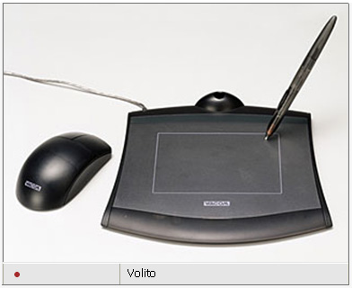

ГРАФИЧЕСКИЙ ПЛАНШЕТ VOLITO
Корпорация Wacom и дистрибуторская компания Dihouse представили новый на российском рынке продукт - графический планшет Volito, который, как ожидается, составит серьезную конкуренцию компьютерной мыши и привнесет в работу пользователей компьютеров ряд новых возможностей. Volito состоит из элегантного черного полупрозрачного планшета, чувствительной к давлению беспроводных пера и мыши без шарика, которые, кроме того, работают без батареек. И мышь, и перо получают энергию от самого планшета благодаря уникальной технологии электромагнитного резонанса, запатентованной WACOM. Сигналы от мыши и пера передаются непосредственно на поверхность планшета, затем информация о силе нажатия и точное положения пера на планшете передается на компьютер.

Перо удобно для быстрой навигации и предоставляет пользователю больше новых возможностей по сравнению со стандартной мышью. Для пользователей, которые предпочитают в работе привычные условия, Volito оснащен компактной беспроводной мышью, которая может использоваться поочередно с пером.
В комплект WACOM входят шесть пакетов программ, которые могут использоваться для того, чтобы работать на PC, обрабатывать фотографии, создавать коллажи, рисовать, подписывать документы и делать рукописные примечания.
Для пользователей Volito создан специальный сайт, предлагающий подсказки и помощь, а также позволяет пользователям посылать открытки, скачивать драйверы и участвовать в конкурсах.